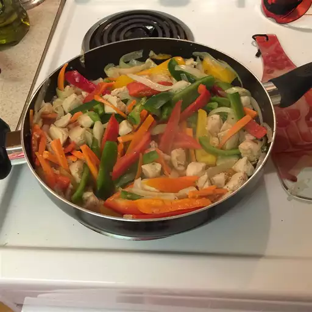

Stir Fried Spaghetti With Veggies Recipe

INGREDIENTS
- 8 ounces Spaghetti
- 2 cloves crushed garlic
- 2 tablespoons olive oil
- 1 onion, sliced into thin rings
- 2 skinless, boneless,chicken breast halves-cut into bite-size pieces
- 2 cups broccolli florets
- 2 cups cauliflower florets
- 2 cups julienned carrots
- salt to taste
- ground black pepper to taste
- 2 tablespoons soy sauce
STEPS TO COOK
- Bring a large pot of water to a boil. cook Spaghetti pasta in boiling water until al dente. Drain.
- Meanwhile, heat oil in large skillet orwork over medium-high heat. Cook garlic in oil for 1 minute. Stir in onion, and cook until soft. Stir in chicken, and cook until juices run clear. Mix in the broccoli, cauliflower, and carrots, and cook for 2 to 5 minutes, stirring frequently. Season with soy sauce, salt, and pepper.
- Toss Pasta with vegetables, and serve warm.